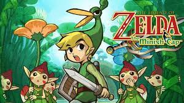

| N° | Nome | Sinopse | Lançamento | Imagem |
|---|---|---|---|---|
| 1° | Skyward Sword | The player controls Link through worlds inhabited by monsters and dungeons with puzzles. |
1994 |  |
| 2° | Minish Cap | Link must explore an overworld and complete multiple dungeons, acquiring new items and abilities throughout the game. |
1994 |  |
| 3° | Four Swords | To thwart Vaati's vile forces, the legendary hero Link turns to the mystical power of the Four Sword to split himself into four colored copies of himself. |
1994 | |
| 4° | Ocarina of Time | The hero's quest is to defeat the Gerudo King and the evil wizard Ganondorf and bring peace to the land of Hyrule. |
1994 | |
Hero Fails
Child Timeline
| N° | Nome | Sinopse | Lançamento | Imagem |
|---|---|---|---|---|
| 5° | A Link to The Past" | The player assumes the role of Link as he journeys to save Hyrule, defeat the demon king Ganon, and rescue the descendants of the Seven Sages. |
1994 | |
| 6° | Link's Awakening | Link is stranded after his ship is caught up in a storm. He embarks on a quest to collect the eight instruments of the Sirens and awaken Koholint's legendary Wind Fish in order to escape the island. |
1994 | |
| 2° | Oracle of Seasons | The Triforce transports Link to the land of Holodrum, where he sees Onox kidnap Din, the Oracle of Seasons. In Ages, the Triforce transports Link to Labrynna, where Veran possesses Nayru. This game is kind of a pair with Oracle of Ages, the main story involves both games. |
1994 | |
| 2° | Oracle of Ages | Link travels between the past and the present as he explores Labrynna twice over. Throughout the game, Link must act in the past to manipulate the future to progress on his adventure. |
1994 | |
| 2° | A Link Between Worlds | The story is set many years after the events of A Link to the Past. Players assume the role of a young adventurer named Link, who sets out to restore peace to the kingdom of Hyrule after the evil sorcerer Yuga captures Princess Zelda and escapes through a rift into the parallel world of Lorule. |
1994 | |
| 2° | Triforce Heroes | Link arrives in the kingdom of Hytopia in the middle of a crisis surrounding its fashion obsession; its princess Styla has been cursed by "The Lady" to wear a brown jumpsuit. Her father, King Tuft, sends out a call for a hero to save the princess depending on a prophecy's characteristics. |
1994 | |
| N° | Nome | Sinopse | Lançamento | Imagem |
|---|---|---|---|---|
| 5° | Majora's Mask" | The player controls Link through worlds inhabited by monsters and dungeons with puzzles. |
1994 | |
| 6° | Twilight Princess | The player controls Link through worlds inhabited by monsters and dungeons with puzzles. |
1994 | |
| 2° | Four Swords Adventures | The player controls Link through worlds inhabited by monsters and dungeons with puzzles. |
1994 | |